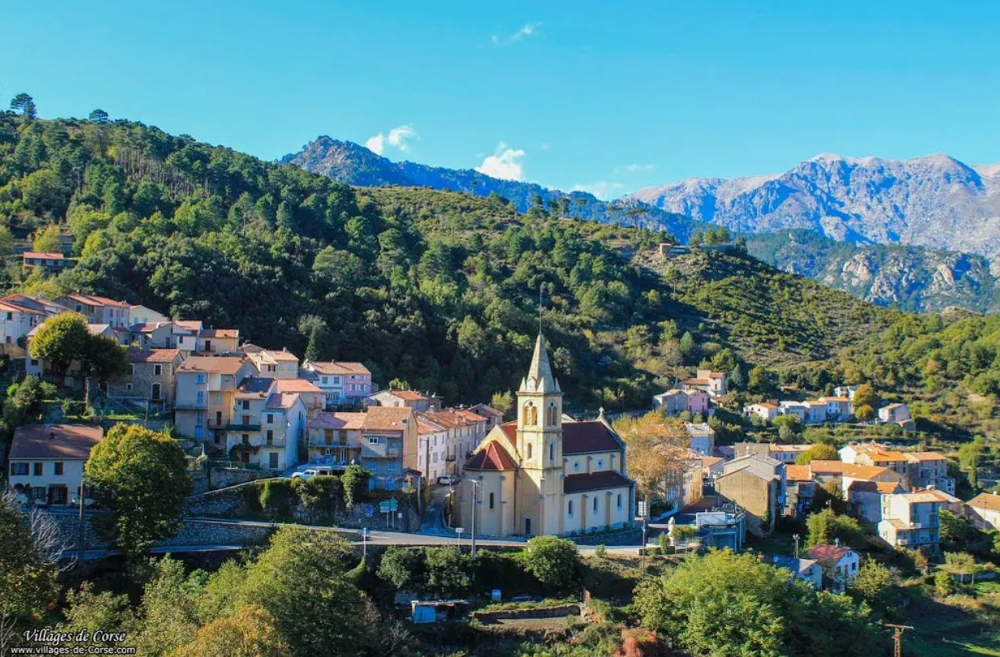

Vivario faluja a korzikai belső közlekedés és logisztika egyik legfontosabb, történelmi kulcscsomópontja. Ebben a magasan fekvő hegyi kistelepülésben találkozik a szigetet átszelő forgalmas T20-as főközlekedési tengely és a legendás D69-es út, amely a Sorba-hágó irányába vezeti tovább a vándorokat. Az autóval és különösen a motorkerékpárral érkezők számára ez a pont egy markáns ritmusváltást követel meg: a szélesebb, tempósabb főút után itt kezdődik el a keskeny, beláthatatlan hajtűkanyarokkal tűzdelt, technikás emelkedő. Mivel a falu az utolsó kényelmes, kiépített bázis a nyers hegyi szakaszok előtt, elhelyezkedése kiváló lehetőséget biztosít az utazás ütemezésére és a mentális felkészülésre.
A település és tágabb környezete a korzikai vasút (Chemins de fer de la Corse) mérnöki látványosságainak egyik legsűrűbb és legizgalmasabb terepe. A merész hegyoldalakba vájt sínek és a közúti hálózat bámulatos, szinte hihetetlen megoldásokkal küzdik le a monumentális szintkülönbségeket. A régió abszolút koronaékszere a falu közvetlen közelében magasodó, ikonikus Vecchio-viadukt, amely a mély sziromba ágyazott Vecchio-folyó völgye felett ível át. A völgy fölé emelkedő, egyszerre robusztus és légies hídszerkezet, valamint a vasútvonal ívei tökéletesen mintázzák azt a kortalan küzdelmet, ahogy az emberi zsenialitás és a mérnöki precizitás harmonikusan, mégis diadalmasan idomul a természet vad formáihoz.
Vivario földrajzi magasságából adódóan már hamisítatlanul a hegyvidéki Korzika karakterét és atmoszféráját hordozza. A levegőt a sűrű, kiterjedt fenyvesek hűvös, gyantás illata és a kristálytiszta hegyi patakok párája tölti meg, miközben a mikroklíma rendkívül dinamikusan, akár percek alatt is képes megváltozni. Ez a vidék tökéletes, fokozatos esztétikai és fizikai átvezetést biztosít a forró tengerparti klímából a belső gerincek és a magashegyi hágók szeles, zord világába. Az itt tartott pihenő során a vándor nemcsak a táj fenséges nyugalmát szívhatja magába, hanem közvetlenül megtapasztalhatja a sziget belsejének azt a büszke, elszigetelt karakterét, amely évszázadok óta lenyűgözi a felfedezőket.